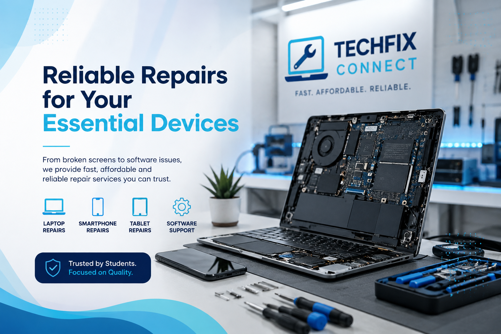

From broken laptop screens to software problems, TechFix Connect provides affordable repair services designed around the needs of university students.

We provide practical and affordable repair solutions to help students keep their devices working reliably.
Hardware diagnostics and repairs for common laptop problems affecting student productivity.
Repair solutions for common smartphone hardware and charging problems.
Assistance with tablet hardware problems that interfere with studying and accessing learning materials.
Software assistance to help students maintain reliable and functional devices.
Identify and remove common malware and unwanted software that can affect device performance.
Assistance with basic data management and recovery where technically possible.
Our services are designed with student budgets in mind, helping make repairs more accessible.
We aim to complete repairs as quickly as possible so students can return to their academic work.
We focus on clear communication, responsible handling of devices and reliable repair solutions.
TechFix Connect is specifically designed around the technology needs of university students.
Submit your repair request through our online booking system.
Our technician assesses the device and identifies the problem.
The required repair is carried out using suitable replacement components where necessary.
Receive an update when your repair is complete and your device is ready for collection.
Don't let a broken device interrupt your studies. Book your repair with TechFix Connect today.
Book Your Repair